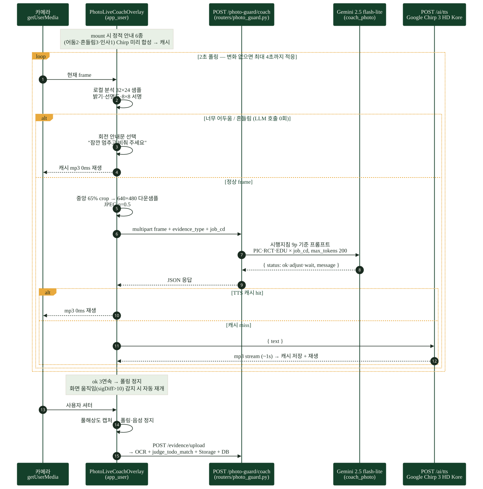

발표용 · 코드 기준 작성 (2026-06-12) · 추론·가정은 ASSUMPTIONS.md 참조
클라이언트 3종 → FastAPI(Render) → Supabase. 외부 API 는 백엔드에서만 — DB가 권위, AI는 보조.

카메라 → 로컬 선별 → Gemini 코칭 → Chirp 3 HD TTS. 정적 안내는 prefetch 캐시로 0ms 재생.

시행지침 → AI 초안 → 관리자 확정 → 이장님 매칭 → prj_todo_list → 오늘 할 일.

repositories/ 의 실제 쿼리·시드 SQL 에서 추론한 테이블·관계. 복합 PK 구조가 핵심.

HWPX 시행지침 → 청킹 → text-embedding-3-large(1536) → Supabase pgvector → 도움말 챗.

GitHub → Vercel(앱 2종) + Render(backend) + Supabase. web_admin 은 로컬(미배포).
